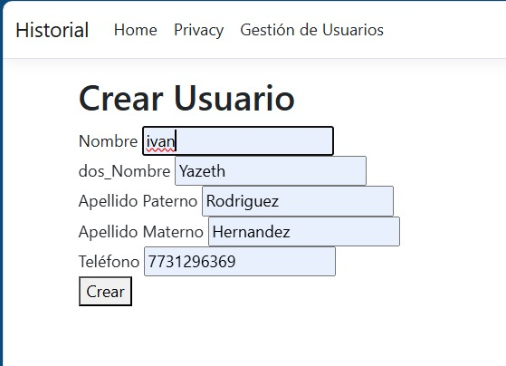
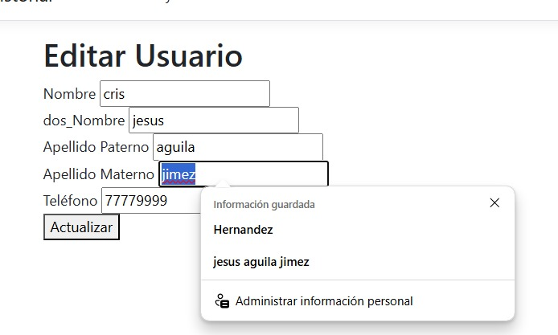
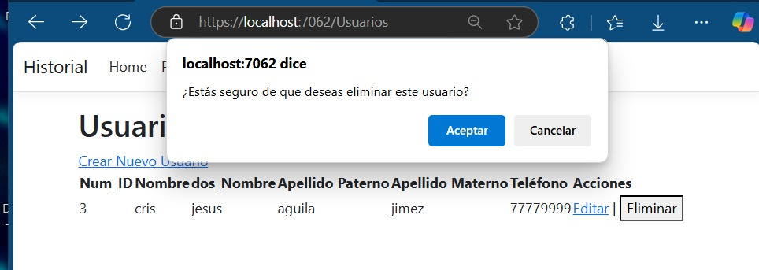

Se realizo el CRUD para el subsistema de Historial en el cual se muestra el formulario que se implemento para registrar Usuarios.
Se muestran los registros que existen en la base de datos en este caso son los siguientes
Crear el usuario consta en llenar ciertos campos como los anteriores antes dichos como se muestra en la siguiente imagen
Modificar o actualizar la información de un usuario permite tener datos más recientes; por ejemplo, pueden cambiar su correo o rol. Este proceso solo podrá ser realizado por el usuario y por aquellos que estén autorizados para gestionar la información personal, ya que el cambio solo se permitirá con la contraseña proporcionada por el usuario.
Eliminar un usuario contribuye a mantener nuestro almacenamiento de registros de usuarios limpio, dado que, por ejemplo, podría ser que ya no esté empleado y, por lo tanto, su registro debe ser eliminado en lugar de conservarlo.
